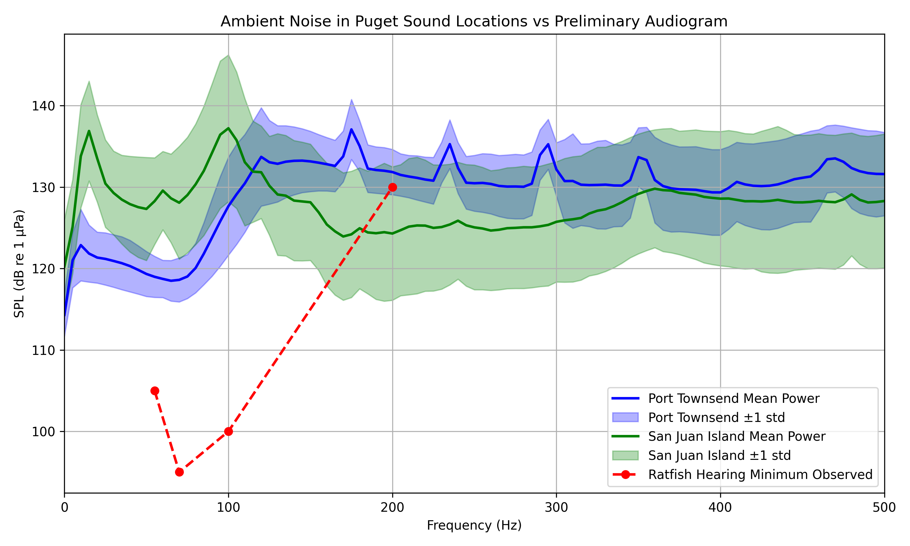

Project Overview
👋 New here? Start with our guided tutorial or hover over underlined terms for definitions.
We analyze auditory evoked potentials (AEPs) in Hydrolagus colliei using a multi-stage electrophysiological pipeline. The workflow detects double-frequency (2f) neural responses to acoustic stimuli across frequency (Hz) and amplitude (dB) conditions, leveraging ICA-based denoising, RMS artifact rejection, bandpass filtering (70–1400 Hz), bootstrap resampling, and SNR estimation around ±100 Hz of the second harmonic.
Key Parameters
- Sampling Rate: 22,050 Hz
- Latency: 2,118 samples (~96 ms)
- Channels: ch1–ch4
- Bootstrap: 100 iterations
- SNR Window: ±100 Hz around 2f
Significance Criteria
- 95% CI of (stimresp − prestim) excludes 0
- 2f bins weighted by ICA SNR
- Noise floor excludes fundamental & 60 Hz harmonics
Auditory Thresholds
Estimated auditory thresholds for Hydrolagus colliei based on significant neural responses:
| Stimulus Frequency (Hz) | Auditory Threshold (dB) |
|---|---|
| 55 | 105 |
| 70 | 95 |
| 100 | 100 |
| 200 | 130 |
Thresholds represent the minimum amplitude at which significant double-frequency responses were detected.
Puget Sound Context 
In shallow areas along the coastlines of Puget Sound, noise is within the observed hearing of the spotted ratfish from this test.
Study Subjects
This analysis includes data from 7 subjects:
- deadFish - Control subject for baseline measurements
- hydrolagusColliei_4 - Test subject
- hydrolagusColliei_5 - Test subject
- hydrolagusColliei_6 - Test subject
- hydrolagusColliei_7 - Test subject (excluded 55 Hz and 100 Hz data)
- hydrolagusColliei_8 - Test subject
- hydrolagusColliei_9 - Test subject
Conservation & Real-World Impact
Why This Research Matters
Understanding the auditory capabilities of spotted ratfish helps us assess the impact of anthropogenic (human-caused) noise on marine ecosystems, particularly in the Puget Sound region.
🚢 Shipping & Vessel Traffic
Commercial shipping produces low-frequency noise that overlaps with fish hearing ranges. Our threshold data (55-200 Hz at 95-130 dB) helps determine safe noise levels.
🏗️ Underwater Construction
Pile driving and construction activities can exceed 150 dB. Understanding auditory thresholds informs mitigation strategies and construction timing.
🔬 Scientific Research
First comprehensive study of ratfish auditory capabilities using advanced signal processing, providing baseline data for future studies.
📋 Environmental Policy
Data supports evidence-based regulations for underwater noise pollution and marine protected areas in the Salish Sea.
Project Summary Document
For a detailed overview of the project methodology and objectives, view the full project summary document below:
If the PDF doesn't display above, click the download button to view it in your PDF reader.
Glossary of Terms
AEP (Auditory Evoked Potential)
Electrical signals generated by the nervous system in response to sound stimuli. Measured using electrodes placed on the fish's head. (Ladich & Fay, 2013)
2f (Double-Frequency Response)
Neural response at twice the stimulus frequency. If the stimulus is 100 Hz, we look for brain activity at 200 Hz, indicating phase-locked neural firing. (Ladich & Fay, 2013)
ICA (Independent Component Analysis)
Statistical method that separates mixed signals into independent components, helping isolate true neural responses from noise and artifacts. (Hyvärinen & Oja, 2000)
SNR (Signal-to-Noise Ratio)
Measure of signal strength relative to background noise. Higher SNR means clearer response. Expressed in decibels (dB). (Ladich & Fay, 2013)
RMS (Root Mean Square)
Mathematical method to measure signal amplitude. Used to detect and remove trials with excessive electrical noise or movement artifacts. (Ladich & Fay, 2013)
Bootstrap Resampling
Statistical technique that creates multiple datasets by resampling with replacement. Used to estimate confidence intervals without assuming normal distribution. (Efron & Tibshirani, 1993)
95% Confidence Interval
Range of values we're 95% confident contains the true value. If the interval excludes zero, the response is statistically significant. (Efron & Tibshirani, 1993)
FFT (Fast Fourier Transform)
Algorithm that converts time-domain signals into frequency-domain representation, allowing us to see which frequencies are present in the neural response. (Cooley & Tukey, 1965)
References
- Cooley, J. W., & Tukey, J. W. (1965). An algorithm for the machine calculation of complex Fourier series. Mathematics of Computation, 19(90), 297–301.
- Efron, B., & Tibshirani, R. J. (1993). An Introduction to the Bootstrap. Chapman and Hall/CRC.
- Hyvärinen, A., & Oja, E. (2000). Independent component analysis: algorithms and applications. Neural Networks, 13(4–5), 411–430.
- Ladich, F., & Fay, R. R. (2013). Auditory evoked potential audiometry in fish. Reviews in Fish Biology and Fisheries, 23(3), 317–364. https://doi.org/10.1007/s11160-012-9297-z